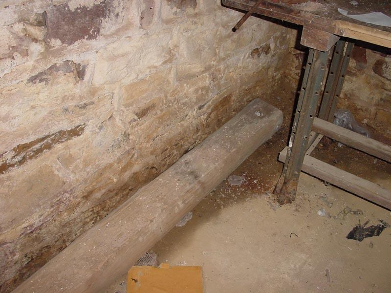

|  |
|
One of the many cuious items residing in the basement appears to be a round, hand cut wood beam. It is likely oak or chesnut given it's apparent age. If you look at the end there is a large post-socket indicating it's either sufficiently aged or home-made construction. It is well preserved and due to the damp nature of the basement, quite heavy. [ Back ] |